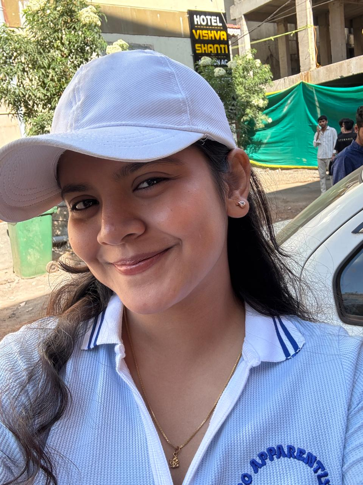

Profile

Aspiring student who wants to be top level sde developer
About
I am a dedicated and enthusiastic B.Tech Computer Engineering student with a keen interest in software development, artificial intelligence, cloud computing, and data analytics. I enjoy exploring new technologies, solving logical problems, and creating projects that help improve my practical knowledge and technical skills. I am continuously working on strengthening my programming abilities through Java, web development, and Data Structures & Algorithms while also learning modern tools and industry-relevant technologies. 🚀
Apart from academics, I believe in continuous self-improvement, consistency, and disciplined learning. I am passionate about building a strong career in the tech industry and aim to become a skilled software engineer capable of contributing to innovative and impactful solutions. I enjoy taking part in internships, technical activities, and creative projects that challenge me to grow both personally and professionally. 😊
Hobbies
- Dancing
- Singing
- Reading
Skills
Goals
- Intership
- Freelancing
- Gsoc